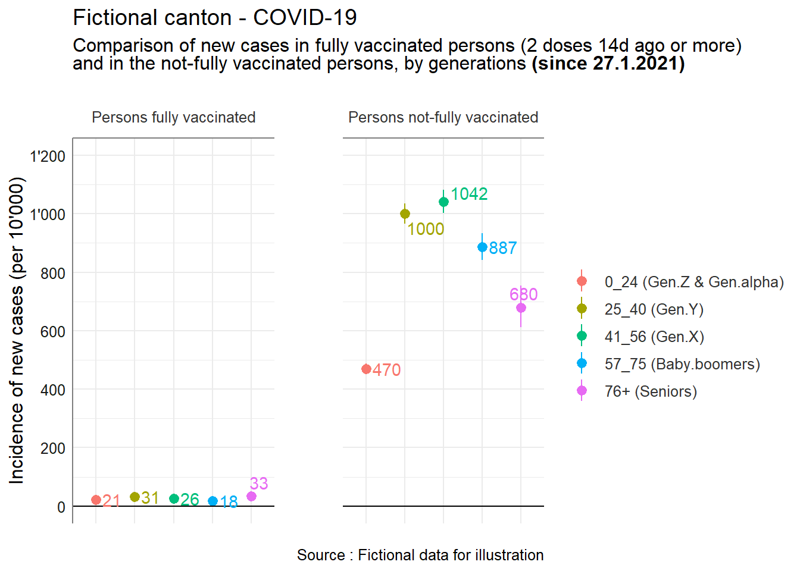

Last updated: 2021-09-08
Checks: 7 0
Knit directory: vaccine_effectiveness_screening_method/analysis/
This reproducible R Markdown analysis was created with workflowr (version 1.6.2). The Checks tab describes the reproducibility checks that were applied when the results were created. The Past versions tab lists the development history.
Great! Since the R Markdown file has been committed to the Git repository, you know the exact version of the code that produced these results.
Great job! The global environment was empty. Objects defined in the global environment can affect the analysis in your R Markdown file in unknown ways. For reproduciblity it’s best to always run the code in an empty environment.
The command set.seed(20210826) was run prior to running the code in the R Markdown file. Setting a seed ensures that any results that rely on randomness, e.g. subsampling or permutations, are reproducible.
Great job! Recording the operating system, R version, and package versions is critical for reproducibility.
Nice! There were no cached chunks for this analysis, so you can be confident that you successfully produced the results during this run.
Great job! Using relative paths to the files within your workflowr project makes it easier to run your code on other machines.
Great! You are using Git for version control. Tracking code development and connecting the code version to the results is critical for reproducibility.
The results in this page were generated with repository version 5bfa740. See the Past versions tab to see a history of the changes made to the R Markdown and HTML files.
Note that you need to be careful to ensure that all relevant files for the analysis have been committed to Git prior to generating the results (you can use wflow_publish or wflow_git_commit). workflowr only checks the R Markdown file, but you know if there are other scripts or data files that it depends on. Below is the status of the Git repository when the results were generated:
Ignored files:
Ignored: .Rhistory
Ignored: .Rproj.user/
Ignored: _sandpit/
Ignored: output/RData/
Ignored: output/png4ppt/p0_1_VE_nomogram_PPV_50_data_global.png
Ignored: output/png4ppt/p0_1_VE_nomogram_PPV_50_data_global_hypothetical.png
Ignored: output/xlsx/
Untracked files:
Untracked: data/data_raw_overall.xlsx
Untracked: output/png4ppt/p02_bis_incidence_cas_vacc2doses_14d_autre_generations.png
Untracked: output/png4ppt/t0_1_VE_hypothesis.png
Untracked: output/png4ppt/t1_vaccine_effectiveness_by_generations.png
Untracked: output/png4ppt/t2_RR_nonvac_vacc_generations_global.png
Unstaged changes:
Modified: 0_run_ME.R
Modified: output/.gitignore
Modified: output/png4ppt/p0_2_VE_nomogram_PPV_40.png
Modified: output/png4ppt/p0_3_VE_nomogram_PPV_80.png
Note that any generated files, e.g. HTML, png, CSS, etc., are not included in this status report because it is ok for generated content to have uncommitted changes.
These are the previous versions of the repository in which changes were made to the R Markdown (analysis/02a_VE_screening_method_overall.Rmd) and HTML (docs/02a_VE_screening_method_overall.html) files. If you’ve configured a remote Git repository (see ?wflow_git_remote), click on the hyperlinks in the table below to view the files as they were in that past version.
| File | Version | Author | Date | Message |
|---|---|---|---|---|
| html | b4b8956 | Olivier.Duperrex | 2021-09-08 | Build site. |
| Rmd | 278ebf1 | Olivier.Duperrex | 2021-09-08 | Initial commit |
The so-called Screening Method is very simple and cost-effective to have a quick assesment of the vaccine effectiveness in a population
It compares the proportion of vaccinated in cases and in the population
The surveillance data on vaccination coverage must be reliable
It is better to stratify by age groups when the coverage varies between them
Further information on limitations of the method can be found in (ECDC 2018) and (WHO 2021)
knitr::opts_chunk$set(echo = TRUE, collapse = TRUE, comment = NA, include = TRUE, results='hide')
# avoid scientific notation
options(scipen=999)
## you are here -----------------------------------------------------
# rm(list = ls())
here::here()[1] "C:/Users/ol8094/Documents/_analyses/vaccine_effectiveness_screening_method"| Abbreviation | en | fr |
|---|---|---|
| VE | vaccine efficacy (in controlled research studies) or vaccine effectiveness (in real public health world) => VE is 1 – odds of vaccination in cases compared to population | efficacité vaccinale étudiée ou réelle => VE est 1 - rapport des cotes des vaccinés parmi les cas comparé àla population |
| PCV | proportion of cases vaccinated | proportion des cas vaccinés |
| PPV | proportion of population vaccinated | proportion de la population vaccinée |
If you don’t know about this method, please look at 01_VE_nomogram.
If you use this script you might have to modify some of the labels below so they correspond to your reality.
language_chosen <- "en"
# language_chosen <- "fr"
if (language_chosen == 'fr') {
## labels fr ---------------------------------
title <- "Canton factice - COVID-19"
label_y <- "PCV = proportion des cas vaccinés"
label_x <- "PPV = proportion de la population vaccinée"
label_agegr_gen <- "Groupe d'âge"
label_total_pop <- "Population pour ce groupe d'âge (N)"
label_total_vaccinated_2doses_14d_N <-
"Personnes complètement vaccinées (N)"
label_total_cases_N <- "Nouveaux cas (N)"
# label_cases_14d_vaccinated_2doses_14d_N <- "Cas vaccinés (N)"
label_PPV_2doses_14d <-
"Proportion de la population vaccinée (PPV)"
label_PCV_2doses_14d <- "Proportion des cas vaccinés (PCV)"
label_VE_2doses_14d <- "Efficacité vaccinale réelle (VE)"
caption_g <- "Source : Données factices pour illustration"
subtitle_t1 <-
"Approximation de l'efficacité vaccinale réelle selon les générations, par la méthode de Farrington"
footnote_t1_1 <-
"Méthode de dépistage = méthode cas-population. Compare la part des vaccinés dans la population à celle des cas, en utilisant les rapports de cotes (Odds ratios)"
# footnote_t1_2 <-
# "Nombre de nouveaux cas depuis le 27.1.2021 (modification formulaire OFSP)"
footnote_t1_3 <- "Nouveaux cas 14j ou plus après la 2e dose"
footnote_t1_4 <- "Avec 2 doses depuis 14j ou plus"
period_1 <- "depuis le 27.1.2021"
footnote_total_cases_t1 <-
paste0("Nombre de nouveaux cas ",
period_1,
" (modification formulaire OFSP)")
subtitle_part_1 <-
"Comparaison des nouveaux cas chez les personnes complètement vaccinées <br> et chez les non ou partiellement vaccinées,
selon les générations "
footnote_per10k <- "Pour 10'000 personnes"
label_cases_14d_vaccinated_2doses_14d_N <-
"Cas chez personnes vaccinées (N)"
label_cases_nonvaccinated_14d <-
"Cas chez personnes non ou partiellement vaccinées (N)"
label_total_nonvaccinated_14d <-
"Personnes non ou partiellement vaccinées (N)"
label_incidence_cases_vaccinated_2doses_14d_per10k <-
'Incidence cas chez les vaccinés (pour 10 mille)'
label_incidence_cases_nonvaccinated_14d_per10k <-
'Incidence cas chez les personnes non vaccinées (pour 10 mille)'
label_RR <-
"Risque relatif de devenir un cas chez les personnes non ou partiellement vaccinées comparé aux personnes complètement vaccinées - si RR>1, la vaccination protège"
label_RR_lower <- 'RR IC95% inf'
label_RR_upper <- 'RR IC95% sup'
label_RR_inverse <-
"Risque relatif de devenir un cas des personnes complètement vaccinées comparé aux personnes non ou partiellement vaccinées - si RR<1, la vaccination protège"
label_vacc_2d_14j <-
"Personnes complètement vaccinées (2 doses depuis 14 jours ou plus)"
label_y_p02 <- 'Incidence de cas (pour 10 mille)'
subtitle_part_p02 <-
"Nouveaux cas pour 10'000 personnes - selon les générations "
label_vacc_2d_14j_fully <- 'Personnes vaccinées complètement'
label_vacc_2d_14j_notfully <- 'Personnes non vaccinées ou partiellement'
} else {
## labels en ---------------------------------
title <- "Fictional canton - COVID-19"
label_y <- "PCV = proportion of cases vaccinated"
label_x <- "PPV = proportion of population fully vaccinated"
label_agegr_gen <- "Age group"
label_total_pop <- "Population by age group (N)"
label_total_vaccinated_2doses_14d_N <-
"Persons fully vaccinated (N)"
label_total_cases_N <- "New cases (N)"
label_cases_14d_vaccinated_2doses_14d_N <-
"New cases despite full vaccination (N)"
label_PPV_2doses_14d <-
"Proportion of population fully vaccinated (PPV)"
label_PCV_2doses_14d <-
"Proportion of cases fully vaccinated (PCV)"
label_VE_2doses_14d <- "Vaccine effectiveness (VE)"
caption_g <- "Source : Fictional data for illustration"
subtitle_t1 <-
"Approximation de vaccine effectiveness by generations, with the Farrington method"
footnote_t1_1 <-
"Screening method = case-population method. Compare the proportion of vaccinated between population and cases, by using Odds ratios"
# footnote_t1_2 <-
# "Number of new cases since le 27.1.2021 (modification formulaire OFSP)"
footnote_t1_3 <- "New cases 14d or more after the 2nd dose"
footnote_t1_4 <- "Vaccinated with 2 doses 14d age or more"
period_1 <- "since 27.1.2021"
footnote_total_cases_t1 <-
paste0("Number of new cases ",
period_1,
" (modification of FOPH declaration)")
subtitle_part_1 <-
"Comparison of new cases in fully vaccinated persons (2 doses 14d ago or more) <br> and in the not-fully vaccinated persons,
by generations "
label_RR <-
"RR : Relative risk to be a case in not-fully vaccinated persons (no vaccine, 1 unique dose or 2 doses less than 14j) compared to fully vaccinated persons (2 doses 14d ago or more) - if RR>1, vaccination protects"
label_RR_lower <- 'RR CI95% low'
label_RR_upper <- 'RR CI95% high'
footnote_per10k <- "For 10'000 persons"
label_cases_nonvaccinated_14d <-
"Cases in persons not-fully vaccinated (N)"
label_total_nonvaccinated_14d <-
"Persons not fully vaccinated (N)"
label_incidence_cases_vaccinated_2doses_14d_per10k <-
'Incidence of new cases in fully vaccinated persons (pour 10 mille)'
label_incidence_cases_nonvaccinated_14d_per10k <-
'Incidence of new cases in not-fully vaccinated persons (pour 10 mille)'
label_RR_inverse <-
"Relative risk to be a case in fully vaccinated persons (2 doses 14d ago or more) compared to not-fully vaccinated persons (no vaccine, 1 unique dose or 2 doses less than 14j) - if RR<1, vaccination protects"
label_vacc_2d_14j <-
"Persons fully vaccinated (2 doses depuis 14 jours ou plus)"
label_y_p02 <- "Incidence of new cases (per 10'000)"
subtitle_part_p02 <-
"New cases per 10'000 persons - selon les générations "
label_vacc_2d_14j_fully <- 'Persons fully vaccinated'
label_vacc_2d_14j_notfully <- 'Persons not-fully vaccinated'
}
## . p02_bis ---------------------------------------------------------
label_x_p02 <- label_vacc_2d_14j
subtitle_p02 <-
gt::md(
paste0(
subtitle_part_p02,
'**(',
period_1,
')<br>**'
)
)
VE_equation <- "VE = 1 - (PCV / (1 - PCV)) / (PPV / (1 - PPV))"
PCV_equation <- "PCV = (PPV - (PPV * VE)) / (1 - (PPV * VE))"
# caption_table : will be used as caption
caption_table <- VE_equationpacman::p_load(
data.table, # managing data
ggplot2, # create plots
ggpmisc, # plot tweaking - i.e. insert a table in the plot
ggrepel, # nice labels on plots
gt, # nice tables
huxtable, # nice tables
magrittr, # for the pipe %>% and the assignement pipe %<>%
scales # for percent in graph axis
# sjmisc
)## local functions --------------------------------------------------
## all functions might not be used in this repository but are kept for illustration
source(here::here('code', '00_functions.R'), encoding = 'UTF-8')The data used in this script is a fictional data set, inspired by the reality of a canton at one point. You can update the file with your own data (or read your own file) and run this script.
## load data --------------------------------------------------------
## data_raw_overall.xlsx is a fictional data set
file_to_import <- here::here('data', 'data_raw_overall.xlsx')
data_raw_overall <-
rio::import(file_to_import) %>% # rio will select the appropriate package to import
setDT() %>% # create a data.table
sjlabelled::var_labels( # add labels using quasiquotation (double exclamation mark)
agegr_gen = !!label_agegr_gen,
total_pop = !!label_total_pop,
total_vaccinated_2doses_14d_N = !!label_total_vaccinated_2doses_14d_N,
total_cases_N = !!label_total_cases_N,
cases_14d_vaccinated_2doses_14d_N = !!label_cases_14d_vaccinated_2doses_14d_N
)
str(data_raw_overall)
## for more info on use of quasiquotation please read https://strengejacke.github.io/sjlabelled/articles/quasiquotation.html ## theme for huxtables
options('huxtable.knit_print_df_theme' = theme_article)
options('huxtable.autoformat_number_format' = list(numeric = "%5.2f"))
## themes and elements for plots ---------------------------------------
theme_set(sjPlot::theme_sjplot2(base_size = 10))
Registered S3 methods overwritten by 'parameters':
method from
as.double.parameters_kurtosis datawizard
as.double.parameters_skewness datawizard
as.double.parameters_smoothness datawizard
as.numeric.parameters_kurtosis datawizard
as.numeric.parameters_skewness datawizard
as.numeric.parameters_smoothness datawizard
print.parameters_distribution datawizard
print.parameters_kurtosis datawizard
print.parameters_skewness datawizard
summary.parameters_kurtosis datawizard
summary.parameters_skewness datawizard
theme_update(
legend.title = element_blank(),
legend.position = "right",
strip.background = element_rect(fill = "white"),
plot.subtitle = ggtext::element_markdown()
)
## Prepare some elements for plots ----------------------------------
# out_png4ppt : output folder for png ---
# needs to be modified according to your own project structure
out_png4ppt <- here::here('output', 'png4ppt')
caption_table <- caption_g
caption_g_bis <- paste0('
', caption_g)We use generations rather then multiples of 10 or 20 because they are more meaningful
This takes into accounts the observation period of 14d post-vaccination
The variable day_14_post_second_vac_date was created in the recoding step and is used to filter the dataset
## . add total by columns ----
t1_vaccine_effectiveness_by_generations <- data_raw_overall %>% janitor::adorn_totals()
## . PPV and PCV ----
## PPV = proportion of population vaccinated
## PCV = proportion of cases vaccinated
t1_vaccine_effectiveness_by_generations[, `:=`(
PPV_2doses_14d = formattable::percent(total_vaccinated_2doses_14d_N / total_pop, 1),
PCV_2doses_14d = formattable::percent(cases_14d_vaccinated_2doses_14d_N / total_cases_N, 1)
)]
## . VE = vaccine effectiveness ----
t1_vaccine_effectiveness_by_generations[, VE_2doses_14d := 1 - (PCV_2doses_14d / (1 - PCV_2doses_14d)) / (PPV_2doses_14d / (1 - PPV_2doses_14d))]
## . modify order of columns ----
new <- c("agegr_gen",
"total_pop" ,
"total_vaccinated_2doses_14d_N",
"PPV_2doses_14d",
"total_cases_N" ,
"cases_14d_vaccinated_2doses_14d_N",
"PCV_2doses_14d",
"VE_2doses_14d")
setcolorder(t1_vaccine_effectiveness_by_generations, new)
## . add variable labels ----
## need to reapply them
t1_vaccine_effectiveness_by_generations %<>%
sjlabelled::var_labels(
agegr_gen = !!label_agegr_gen,
total_pop = !!label_total_pop,
total_vaccinated_2doses_14d_N = !!label_total_vaccinated_2doses_14d_N,
PPV_2doses_14d = !!label_PPV_2doses_14d,
total_cases_N = !!label_total_cases_N,
cases_14d_vaccinated_2doses_14d_N = !!label_cases_14d_vaccinated_2doses_14d_N,
PCV_2doses_14d = !!label_PCV_2doses_14d,
VE_2doses_14d = !!label_VE_2doses_14d
)
## save table as xlsx
name_xlsx <-
here::here(
'output',
'xlsx',
't1_vaccine_effectiveness_by_generations.xlsx'
)
writexl::write_xlsx(t1_vaccine_effectiveness_by_generations, name_xlsx)
## save table as RData
filename <- here::here('output', 'RData', 't1_vaccine_effectiveness_by_generations.RData')
save(t1_vaccine_effectiveness_by_generations, file = filename)# . gt ----
# subtitle_t1 <- "Approximation de l'efficacité vaccinale réelle selon les générations, par la méthode de Farrington"
table_name <- 't1_vaccine_effectiveness_by_generations.png'
# names(t1_vaccine_effectiveness_by_generations)
## generate table with labels
t1_vaccine_effectiveness_by_generations_gt <-
t1_vaccine_effectiveness_by_generations %>%
gt() %>%
tab_header(title = title,
subtitle = subtitle_t1) %>%
cols_label(
agegr_gen = label_agegr_gen,
total_pop = label_total_pop,
total_vaccinated_2doses_14d_N = label_total_vaccinated_2doses_14d_N,
PPV_2doses_14d = label_PPV_2doses_14d,
total_cases_N = label_total_cases_N,
cases_14d_vaccinated_2doses_14d_N = label_cases_14d_vaccinated_2doses_14d_N,
PCV_2doses_14d = label_PCV_2doses_14d,
VE_2doses_14d = label_VE_2doses_14d
) %>%
fmt_number(columns = c(2:3, 5:6),
decimals = 0,
sep_mark = "'") %>%
tab_footnote(footnote = footnote_t1_1,
locations = cells_title(groups = "subtitle")) %>%
tab_footnote(footnote = footnote_total_cases_t1,
locations = cells_column_labels(columns = total_cases_N)) %>%
tab_footnote(
footnote = footnote_t1_3,
locations = cells_column_labels(columns = cases_14d_vaccinated_2doses_14d_N)
) %>%
tab_footnote(
footnote = footnote_t1_4,
locations = cells_column_labels(
columns = c(
total_vaccinated_2doses_14d_N,
PPV_2doses_14d,
PCV_2doses_14d,
VE_2doses_14d
)
)) %>%
tab_footnote(footnote = VE_equation,
locations = cells_column_labels(columns = VE_2doses_14d)) %>%
tab_source_note(source_note = caption_table) %>%
tab_options(data_row.padding = px(2)
)
# t1_vaccine_effectiveness_by_generations_gt
## save gt table as png
t1_vaccine_effectiveness_by_generations_gt %>% gtsave(table_name,
path = out_png4ppt)## . t2_RR_nonvac_vacc_generations_global ----
subtitle <-
md(
paste0(
subtitle_part_1,
'**(',
period_1,
')**'
)
)
table_name <- 't2_RR_nonvac_vacc_generations_global.png'
## t2_RR_nonvac_vacc_generations_global ---
names(t1_vaccine_effectiveness_by_generations)
t2_RR_nonvac_vacc_generations_global <-
t1_vaccine_effectiveness_by_generations[, .(
agegr_gen,
total_pop,
total_vaccinated_2doses_14d_N,
PPV_2doses_14d,
total_cases_N ,
cases_14d_vaccinated_2doses_14d_N
)]
multiplicator <- 10 ^ 4
t2_RR_nonvac_vacc_generations_global[, incidence_cases_vaccinated_2doses_14d_per10k := round(
multiplicator * (
cases_14d_vaccinated_2doses_14d_N / total_vaccinated_2doses_14d_N
),
1
)]
t2_RR_nonvac_vacc_generations_global[, cases_nonvaccinated_14d := total_cases_N - cases_14d_vaccinated_2doses_14d_N]
t2_RR_nonvac_vacc_generations_global[, total_nonvaccinated_14d := total_pop - total_vaccinated_2doses_14d_N]
t2_RR_nonvac_vacc_generations_global[, incidence_cases_nonvaccinated_14d_per10k := round(multiplicator * (cases_nonvaccinated_14d / total_nonvaccinated_14d), 1)][]
## approach :
## # non-exposed = vaccinated
## # exposed = non-vaccinated
t2_RR_nonvac_vacc_generations_global[, c('RR', 'RR_lower', 'RR_upper',
'AR', 'AR_lower', 'AR_upper') := add_RR_AR(
x2 = cases_14d_vaccinated_2doses_14d_N, # non-exposed = vaccinated
n2 = total_vaccinated_2doses_14d_N, # non-exposed = vaccinated
x1 = cases_nonvaccinated_14d, # exposed = non-vaccinated
n1 = total_nonvaccinated_14d, # exposed = non-vaccinated
rounding = 0
),
keyby = agegr_gen]
## . !!! pb with ARR need to be checked !!! ----
t2_RR_nonvac_vacc_generations_global[, c('AR', 'AR_lower', 'AR_upper') := NULL]
t2_RR_nonvac_vacc_generations_global[, RR_inverse := round(1/RR, 3)][]
## . add labels ----
# foo5b <- copy_labels(foo5b, foo5)
sjlabelled::get_label(t2_RR_nonvac_vacc_generations_global)
# names(t2_RR_nonvac_vacc_generations_global)
t2_RR_nonvac_vacc_generations_global <-
t2_RR_nonvac_vacc_generations_global %>%
sjlabelled::var_labels(
agegr_gen = !!label_agegr_gen,
total_pop = !!label_total_pop,
total_vaccinated_2doses_14d_N = !!label_total_vaccinated_2doses_14d_N,
PPV_2doses_14d = !!label_PPV_2doses_14d,
cases_14d_vaccinated_2doses_14d_N = !!label_cases_14d_vaccinated_2doses_14d_N,
cases_nonvaccinated_14d = !!label_cases_nonvaccinated_14d,
total_nonvaccinated_14d = !!label_total_nonvaccinated_14d,
incidence_cases_vaccinated_2doses_14d_per10k = !!label_incidence_cases_vaccinated_2doses_14d_per10k,
incidence_cases_nonvaccinated_14d_per10k = !!label_incidence_cases_nonvaccinated_14d_per10k,
RR = !!label_RR,
RR_lower = !!label_RR_lower,
RR_upper = !!label_RR_upper,
# AR = !!'Différence de risque',
# AR_lower = !!'AR IC95% inf',
# AR_upper = !!'AR IC95% sup',
RR_inverse = !!label_RR_inverse
)
# sjlabelled::get_label(t2_RR_nonvac_vacc_generations_global)
## get rid of the inverse RR
t2_RR_nonvac_vacc_generations_global[, RR_inverse:=NULL]
new_col_order <-
c(
"agegr_gen",
"total_pop",
"total_vaccinated_2doses_14d_N",
"total_nonvaccinated_14d",
"PPV_2doses_14d" ,
"total_cases_N",
"cases_14d_vaccinated_2doses_14d_N",
"cases_nonvaccinated_14d" ,
"incidence_cases_vaccinated_2doses_14d_per10k" ,
"incidence_cases_nonvaccinated_14d_per10k",
"RR",
"RR_lower",
"RR_upper"
)
setcolorder(t2_RR_nonvac_vacc_generations_global, new_col_order)
## generate table with labels ---
t2_RR_nonvac_vacc_generations_global_gt <-
t2_RR_nonvac_vacc_generations_global %>%
gt() %>%
tab_header(title = title,
subtitle = subtitle) %>%
cols_label(
agegr_gen = label_agegr_gen,
total_pop = label_total_pop,
total_cases_N = label_total_cases_N,
total_vaccinated_2doses_14d_N = label_total_vaccinated_2doses_14d_N,
PPV_2doses_14d = label_PPV_2doses_14d,
cases_14d_vaccinated_2doses_14d_N = "Cas chez personnes vaccinées (N)",
cases_nonvaccinated_14d = "Cas chez personnes Autres (N)",
total_nonvaccinated_14d = "Personnes Autres (N)",
incidence_cases_vaccinated_2doses_14d_per10k = 'Incidence cas chez les personnes vaccinées (pour 10 mille)',
incidence_cases_nonvaccinated_14d_per10k = 'Incidence cas chez les personnes Autres (pour 10 mille)',
RR = "RR",
RR_lower = 'RR IC95% inf',
RR_upper = 'RR IC95% sup'
) %>%
fmt_number(
columns = c(2:4, 6:8),
decimals = 0,
sep_mark = "'"
) %>%
tab_footnote(footnote = footnote_total_cases_t1,
locations = cells_column_labels(columns = total_cases_N)) %>%
tab_footnote(
footnote = "Nouveaux cas 14j ou plus après la 2e dose",
locations = cells_column_labels(columns = cases_14d_vaccinated_2doses_14d_N)
) %>%
tab_footnote(footnote = "Vaccinée = avec 2 doses depuis 14j ou plus",
locations = cells_column_labels(columns = c(total_vaccinated_2doses_14d_N,
PPV_2doses_14d,
incidence_cases_vaccinated_2doses_14d_per10k))) %>%
tab_footnote(footnote = "Autres = aucun vaccin, 1 seule dose ou 2 doses depuis moins de 14j",
locations = cells_column_labels(columns = c(cases_nonvaccinated_14d,
total_nonvaccinated_14d,
incidence_cases_nonvaccinated_14d_per10k))) %>%
tab_footnote(
footnote =
label_RR,
locations = cells_column_labels(columns = c(RR, RR_lower, RR_upper))) %>%
tab_source_note(source_note = caption_table) %>%
tab_options(data_row.padding = px(2)
)
t2_RR_nonvac_vacc_generations_global_gt
t2_RR_nonvac_vacc_generations_global_gt %>% gtsave(table_name, path = out_png4ppt,
vwidth = 1200, vheight = 600)
name_xlsx <-
here::here(
'output',
'xlsx',
't2_RR_nonvac_vacc_generations_global.xlsx'
)
writexl::write_xlsx(t2_RR_nonvac_vacc_generations_global, name_xlsx)
filename <- here::here('output', 'RData', 't2_RR_nonvac_vacc_generations_global.RData')
save(t2_RR_nonvac_vacc_generations_global, file = filename)## . t2_bis_RR_nonvac_vacc_generations_global - incidence with CI ---------------------------------------
## reshape and add vacc_2d_14j --
## .. t2_vacc_2d_14j : subset of t7 ----
t2_vacc_2d_14j <-
t2_RR_nonvac_vacc_generations_global[, .(vacc_2d_14j = label_vacc_2d_14j_fully,
agegr_gen,
total = total_vaccinated_2doses_14d_N,
cases = cases_14d_vaccinated_2doses_14d_N)]
## .. t2_nonvacc_2d_14j : subset of t7 ----
t2_nonvacc_2d_14j <-
t2_RR_nonvac_vacc_generations_global[, .(vacc_2d_14j = label_vacc_2d_14j_notfully,
agegr_gen,
total = total_nonvaccinated_14d,
cases = cases_nonvaccinated_14d)]
t2_bis_RR_nonvac_vacc_generations_global <- rbind(t2_vacc_2d_14j, t2_nonvacc_2d_14j)
t2_bis_RR_nonvac_vacc_generations_global[, c(
'inc_per10K',
'conf_low_per10K',
'conf_high_per10K'
) := add_prop_test(
cases,
total,
multiplicator = 10 ^ 4,
rounding = 1
), keyby = .(vacc_2d_14j, agegr_gen)]
# t2_bis_RR_nonvac_vacc_generations_global[, vacc_2d_14j := relevel(as.factor(vacc_2d_14j), ref = 'Oui')]
t2_bis_RR_nonvac_vacc_generations_global %<>%
sjlabelled::var_labels(
vacc_2d_14j = label_vacc_2d_14j
)
name_xlsx <-
here::here(
'output',
'xlsx',
't2_bis_RR_nonvac_vacc_generations_global.xlsx'
)
writexl::write_xlsx(t2_bis_RR_nonvac_vacc_generations_global, name_xlsx)
nudge_x <- 0.2
p02_bis <-
ggplot(
t2_bis_RR_nonvac_vacc_generations_global[!(agegr_gen == 'Total'),],
aes(
x = agegr_gen,
y = inc_per10K ,
ymin = conf_low_per10K ,
ymax = conf_high_per10K,
label = round(inc_per10K, 0),
col = agegr_gen
)
) +
# ylim(0, 100) +
scale_y_continuous(
limits = c(0, 1200),
breaks = seq(0, 1200, 200),
labels = comma_format(big.mark = "'", accuracy = 1)
) +
geom_pointrange() +
# coord_flip() +
labs(
title = title,
subtitle = subtitle,
x = '',
y = label_y_p02,
caption = caption_g_bis
) +
geom_hline(yintercept = 0) +
scale_x_discrete(labels = NULL, position = 'top') +
# scale_x_discrete(guide = guide_axis(n.dodge = 3)) +
# scale_x_discrete(guide = guide_axis(angle = 45)) +
facet_grid(. ~ vacc_2d_14j) +
ggrepel::geom_text_repel(
nudge_x = nudge_x,
min.segment.length = Inf,
show.legend = FALSE # Don't display "a" in the legend.
) +
theme(
panel.spacing = unit(3, "lines"),
text = element_text(size = 12),
strip.placement = 'top',
strip.background = element_blank()
) +
guides(fill = guide_legend(title = "",
override.aes = aes(label = "")))
p02_bis
plot_name <- paste0("p02_bis_incidence_cas_vacc2doses_14d_autre_generations.png")
ggsave(plot_name, path = out_png4ppt, width = 10, height = 6, dpi = 600)
sessionInfo()